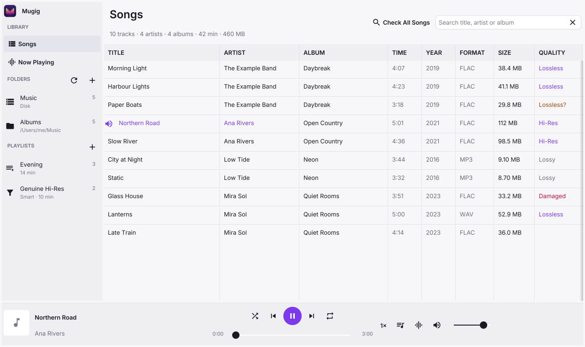
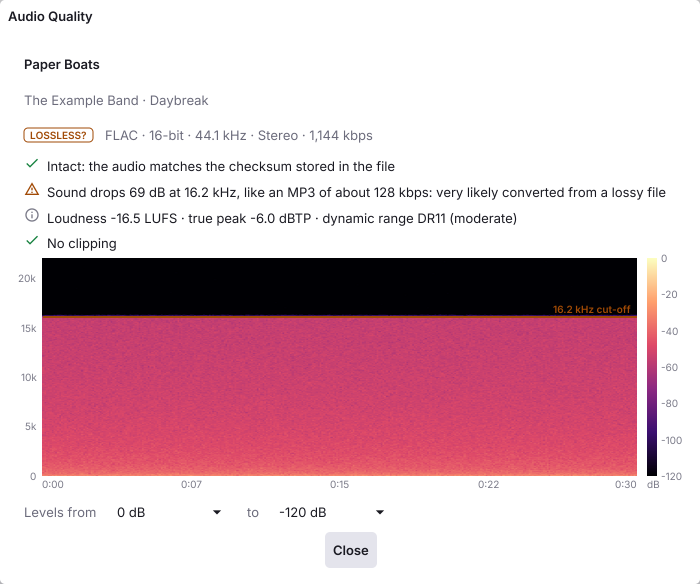
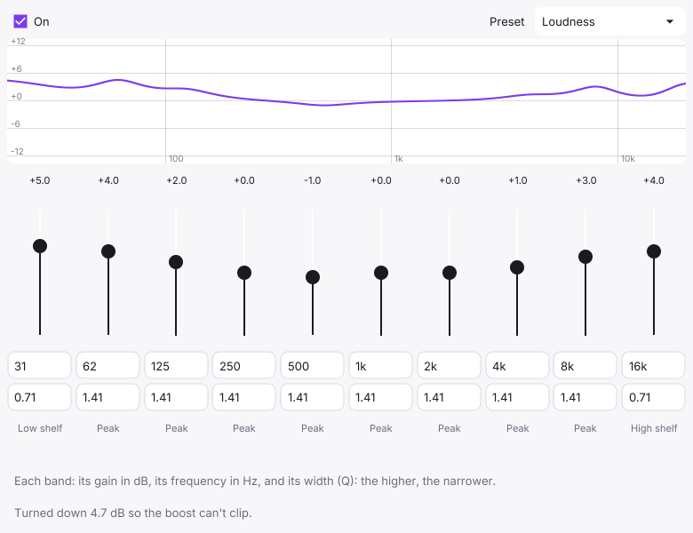
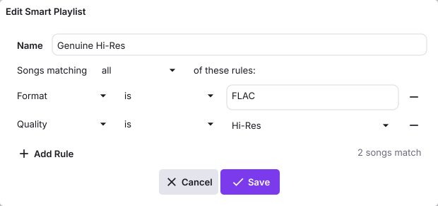

A music player that checks your files.
Mugig plays FLAC, MP3, WAV and Ogg Vorbis, and on macOS Apple Lossless and AAC, unconverted and without gaps between songs. It can also tell you whether a FLAC is really lossless or was made from an MP3, whether it is damaged, and how loud it is.

Checking audio quality
A lot of music sold or shared as lossless isn’t. A FLAC file made from an MP3 looks like any other FLAC file, but the detail the MP3 threw away is gone for good. You can only tell by looking at the sound itself.
Right-click a song and choose Check Audio Quality, or Check All Songs to go through the whole library in the background. Each file is read once; the results are kept until the file changes.
| Check | What it looks at |
|---|---|
| Integrity | Decodes the whole file and compares it with the MD5 checksum stored in FLAC files. Finds WAV files that were cut short. |
| Lossy source | The frequency cut-off that MP3 and AAC encoders leave, and the gaps they leave in the spectrum. |
| Fake hi-res | 24-bit files padded from 16 bits, and 96 kHz files upsampled from CD quality. |
| Loudness | Integrated loudness (ITU-R BS.1770-4), true peak, DR dynamic range, and clipping. |
| Spectrogram | With a colour scale, an adjustable range, and any cut-off marked. |

The verdicts
| Lossless | Intact, and no sign of a lossy source. |
| Hi-Res | Lossless, and the extra bits and sample rate are real. |
| Lossless? | Looks like it was made from an MP3 or AAC. |
| Lossy | An MP3 or Ogg file, as expected. |
| Damaged | Errors when decoding, audio that doesn’t match its checksum, or a file cut short. |
How reliable it is
Tested on a library of 833 real files, the lossy-source check caught 93% of MP3s that had been decoded to 16-bit files, and wrongly flagged 1.6% of genuine lossless files. The wording says how strong the evidence is (“very likely” or “probably”) rather than giving a percentage.
Treat Lossless? as a reason to look at the spectrogram, not as proof.
Playback
By default the sound reaches your DAC exactly as it is in the file. On macOS, Mugig switches the output device to each song’s sample rate and puts it back when you quit; the Now Playing page says whether the audio is going out unconverted. The equalizer, crossfeed and speed controls are there when you want them, and are out of the way when you don’t.
- Gapless
- Songs at the same sample rate follow each other without a pause, so live albums and continuous mixes play as recorded. The silence MP3 encoders add at each end is removed.
- Exclusive access (macOS)
- While a song plays, no other app or system sound can use the output device or change its sample rate.Controls → Exclusive Access
- Equalizer
- Ten bands, each with its own frequency, gain and width, with shelves at both ends, a few presets and a response graph. Boosting lowers the overall level by the same amount, so nothing clips.Controls → Equalizer… · ⌥⌘E
- Crossfeed
- For headphones: each ear hears a little of the other channel, as it would from speakers. Three strengths, from the bs2b design.Controls → Crossfeed
- Speed
- 0.5× to 2×, keeping the pitch. At 1× the audio is untouched.⌘] faster, ⌘[ slower
- Volume
- Playback fades in over a second and fades out when you pause, and turning the volume up rises smoothly rather than jumping. Turning it down is immediate.Controls → Fade In and Out
- Slow and damaged disks
- Decoding runs three seconds ahead, so a USB disk spinning up doesn’t interrupt the music. A corrupt FLAC frame becomes a short silence instead of stopping the song.
- Up Next and resume
- Queue songs with Play Next or Play Later. When you reopen Mugig, the last song is waiting where you stopped.
- Output and media keys
- Choose the output device in the app. On macOS the media keys and the system’s Now Playing controls work, with album art.
- Visualizer
- A spectrum or waveform on the Now Playing page.⌘L

Library
Add as many music folders as you like, on internal, USB or network disks. Mugig watches them for changes. If a disk is unplugged its folder is marked “Not connected”, and it is scanned again when the disk comes back.
- Playlists
- Add songs from the right-click menu, or save the Up Next queue as a playlist. Reorder songs within a playlist with Move Up and Move Down, and export it as M3U for other players.
- Smart playlists
- Defined by rules instead, such as “Format is FLAC and Quality is Hi-Res”, and kept up to date. Rules can use title, artist, album, year, format, quality, time, size, folder and file date.
- CUE sheets
- An album ripped to a single file with a
.cuesheet is listed as separate songs and plays without gaps. Sheets in Chinese, Japanese, Korean and Windows Western encodings are read correctly. - What gets scanned
- Sounds inside apps and plug-ins,
node_modules, hidden folders and the Trash are skipped. The format is read from the file’s contents, not its extension. - Search, sort and columns
- Sort by any column, including time, size and quality. Hide the columns you don’t need. The summary line gives the number of songs, artists and albums, total time and size.
- Working with files
- Select several songs at once. Get Info, Show in Finder, Copy File Path, and Move to Trash, which asks first; the file can be put back from the Trash.

Keyboard shortcuts
On Windows and Linux, use Ctrl where these say ⌘.
| Play or pause | Space |
| Next or previous song | ⌘→ ⌘← |
| Skip 10 seconds forward or back | ⌥⌘→ ⌥⌘← |
| Volume up or down | ⌘↑ ⌘↓ |
| Mute | ⌥⌘↓ |
| Faster or slower | ⌘] ⌘[ |
| Stop | ⌘. |
| Equalizer | ⌥⌘E |
| Find | ⌘F |
| Visualizer | ⌘L |
| Check the playing song | ⌘I |
| Check all songs | ⇧⌘I |
| Open files or add a folder | ⌘O ⇧⌘O |
| Rescan folders | ⌘R |
| Show the playing song in Finder | ⇧⌘R |
| Select all songs or clear the selection | ⌘A Esc |
Building Mugig
There are no ready-made downloads yet, so Mugig is built from source. It needs Go 1.24 or later and a C compiler.
-
Install Go, and a C compiler for your system:
macOS xcode-select --installLinux On Debian or Ubuntu: sudo apt install gcc libgl1-mesa-dev xorg-devWindows MinGW-w64 GCC, for example from MSYS2 -
Get the source:
git clone https://github.com/yeungon/mugig.git cd mugig
-
Build and run it, or make an app:
make run # build and run make package # make the app (Mugig.app on macOS) make install # macOS: also copy it to /Applications
Building for other systems
make mac builds one app for Apple silicon and Intel Macs. make windows and make linux use fyne-cross, which needs Docker. The results go in dist/.
Platform support
Mugig is developed on macOS, and that’s where it has been tested most. The Windows and Linux builds work but have seen much less use. Sample-rate switching, exclusive access, the system Now Playing controls and the native Open panel are macOS only.